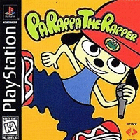

PaRappa the Rapper

PaRappa the Rapper é um jogo de ritmo publicado pela Sony Computer Entertainment para o PlayStation . Foi lançado originalmente no Japão em 1996 e mundialmente em 1997. Criado pelo produtor musical Masaya Matsuura em colaboração com o artista Rodney Greenblat, o jogo apresenta um design visual único e jogabilidade baseada em rap, sendo considerado o primeiro jogo de ritmo propriamente dito. Foi portado para o PlayStation Portable em 2006 em comemoração ao seu 10º aniversário. Uma versão remasterizada do jogo original para PlayStation foi lançada para PlayStation 5 em 2021 para o vigésimo-quinto aniversário do jogo.